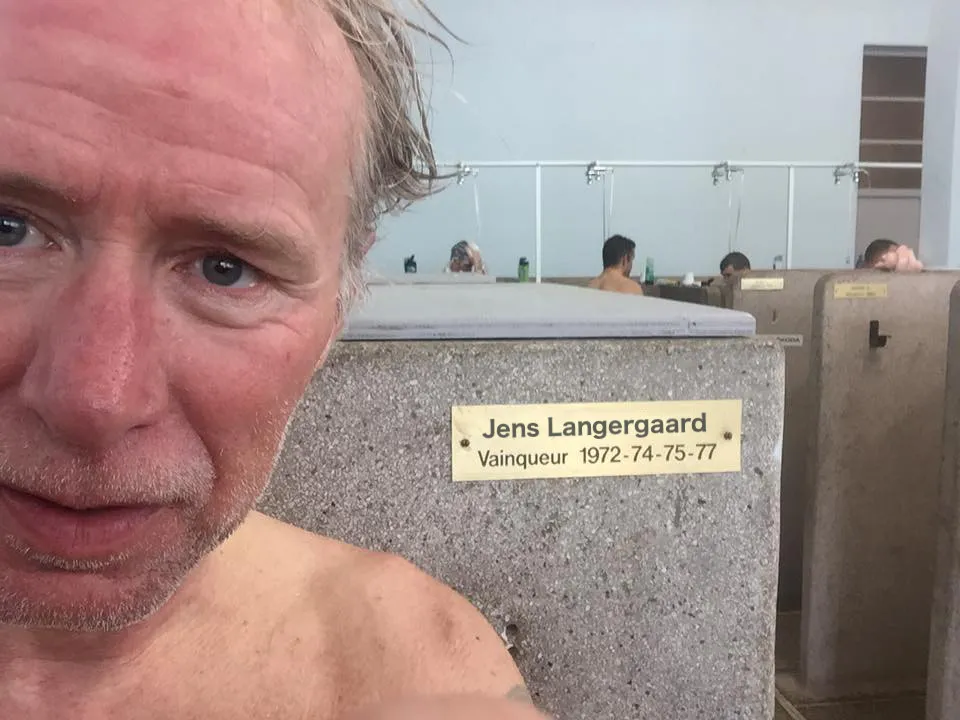

Wildcard til Grand Prix Herning – en forårsdag på Heden

Squadra Molteni har fået wildcard til danmarks svar på Paris-Roubaix – Grand Prix Herning – en forårsdag på Heden, og stiller til start med grusspecialisten Jens Langergaard i kaptajnrollen.
Grand Prix Herning – en forårsdag på Heden, har for længst opnået klassikerstatus i Danmark. Med vindere som Bjarne Riis, Frank Høj, Michael Blaudzum, Alex Rasmussen, Lasse Normann Hansen, Mads Würts Schmidt, er der ikke tvivl om, at det er et løb, som står øverst på listen over prestigefyldte danske cykelløb. Og næste vinder bliver måske Jens Langergaard.
Wildcard og vindercancer til Squadra Molteni
Squadra Molteni har, som førende hold på den danske retro-rangliste, fået tildelt 2 wildcards til Grand Prix Herning. Og selvom det er en stor opgave, mener sportsdirektør Klaus Maarup Kjærsgaard, at holdet har gode chancer for at vinde løbet.
Grand Prix Herning er en stor mundfuld – ingen tvivl om det. Og godt nok er en del ryttere sendt på ferie efter et hårdt forårsprogram med Ronde van Borum, La Fleche Vejllonne, Giro de Stjær og Grand Prix Vejle Ådal – men jeg har udtaget de 2 ryttere, som er klar til at løfte opgaven. Nemlig Kaptajn Bjørnsteen og grus- og brostensspecialist Jens Langergaard, lyder der fra sportsdirektør Klaus Maarup Kjærsgaard.
Jens Langergaard i kaptajnrolle
Normalt er Jens Langergaard en vellidt og hårdarbejdende domestique på Squadra Molteni. Men når det kommer til de specielle forårsløb med grus og brosten, træder Langergaard i karakter – og ind i en kaptajnrolle. Det viste han med bragende tydelighed ved forårsklassikeren Ribe – Tønder – Ribe, hvor han vandt stålklassen.
Der er ingen tvivl om, at det er Jens Langergaard, der skal køres for til Grand Prix Herning. Jens kommer med en frisk sejr fra Ribe – Tønder – Ribe, og brosten, grus og sidevind, det er hans yndlingsterræn. Jeg har kørt som hjælperytter for Jens mange gange ved Paris-Roubaix – og dér på de toppede brosten, er han stærk som en okse og elegant som en kat. Så selvfølgelig er det Jens, der er kaptajn ved Grand Prix Herning – og han har store chancer for at vinde, afslører Kaptajn Bjørnsteen.


Grand Prix Herning køres 29. maj, og køres på en 118 km lang rute, der er en kombination af små asfaltveje og 16 segmenter på grus strækninger. Der er start og mål på Torvet i Herning.